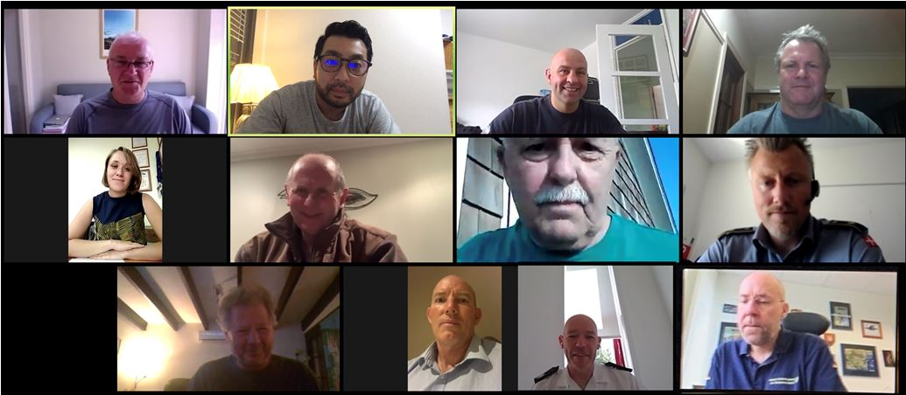

TRAINING WORKING GROUP
- Details
-
Hits: 26009
The INSARAG Training Working Group (TWG) was established with a mandate to focus on the development of training standards and content for the INSARAG community. The TWG takes its direction from the INSARAG Secretariat which, in turn, follows direction given by the INSARAG Steering Committee. The group meets two to three times a year. The reports of this working group's meetings can be found below.
Chair of TWG, Mr. Dewey Perks
2020
Following on from the previous online meeting which was held in July, the INSARAG TWG, with representatives of the IMWG, MWG and TL Reps held a further video conference on 12th August. The meeting discussed a variety of current INSARAG matters, ranging from the current IEC/R system review to the recent USAR deployments to the Beirut Explosion. The members also reviewed TWG workstreams, organisation of meetings and the distribution of work packages in order to better fit the challenges we are all facing during the COVID-19 pandemic.

TWG Meeting 8 July 2020
TWG Meeting Notes
2019
TWG Meeting Santiago de Chile October 2019
Chairman's summary
TWG Meeting Muscat June 2019
The meeting was hosted by the Sultanate of Oman, Royal Oman Police (ROP), Public Authority for Civil Defense and Ambulance (PACDA), in Muscat, Oman. The meeting would not have been possible without the excellent support and generous hospitality of PACDA.
TWG Meeting Notes Muscat June 2019 Final Note
2018
Working Group Meeting, Germany, December 2018
The INSARAG Training Working Group, including representatives from the Team Leaders and Information Management Working Group, met in Berlin from the 10th to the 13th of December. The Group were hosted by Albrecht Broemme, President of THW, at the Regional THW Office in Berlin, and key agenda items for the meeting included; The development of the INSARAG Classification Team Leaders and Mentors Training Course, The continued development of USAR Coordination Course and harmonisation with OSOCC methodology, and Revision of INSARAG Guidelines Volume II, Manual C.
TWG Meeting Notes Berlin 18 Final Draft
Meeting during Team Leader Meeting, September 2018
TWG: Continues working with other WGs on guideline revisions, a new IEC/IER checklist, and a reformatted TL/Mentor course.
Training WG update
Working Group Meeting, Denmark, April 2018
INSARAG Training Working Group (TWG) met in Tinglev, Denmark in the DEMA Emergency Services College from 15 to 18 April 2018
Meeting Note
2014
FIRST MEETING, MARCH 2014 in ABU DHABI, UAE
SECOND MEETING, SEPTEMBER 2014 in QATAR
Member
2013
FIRST MEETING, MARCH 2013 IN LUZERN, SWITZERLAND
SECOND MEETING, JUNE 2013 IN BERN, SWITZERLAND
THIRD MEETING, SEPTEMBER 2013 IN THE HAGUE, NETHERLANDS
Member
2012
FIRST MEETING,17-25 MARCH 2012 IN BRISBANE, AUSTRALIA
INSARAG Website
INSARAG Document Management Procedure
Guidelines Division ISG and OPS
INSARAG Governance PP v0.1
INSARAG OPS Trng Performance & Equip Standard April 2012_V2
INSARAG Advisory Organisation Advisory Process v1.0
Outcomes from TLs Governance Workshop V1.0
USAR Team Description TL Meeting Australia 2012 v2
SECOND MEETING, 4-10 NOVEMBER 2012, LOS ANGELES, USA
The meeting was hosted by the LA County USAR Section (USA 2) and was
conducted in Los Angeles, USA, from the 4th – 10th November 2012. Please find attached the Chairman Summary .
2011
FIRST MEETING, 30 MARCH-03 APRIL 2011, COSTA RICA
The first meeting of the INSARAG TWG in 2011 took place from 30 March–03 April 2011 in Costa Rica back to back with the INSARAG Team Leaders Meeting. Below is the Chairman Summary of this meeting. Please note that the outcomes of this working group are not official INSARAG documents until they are endorsed by the INSARAG Steering Group.
Chairman Summary
SECOND MEETING, 9-15 OCTOBER 2011, UAE
The second and last meeting of the INSARAG TWG in 2011 took place from 9-15 October 2011 in UAE.
2010
FIRST MEETING, 25-29 JANUARY 2010, SINGAPORE
The first meeting of the INSARAG TWG in 2010 took place from 25-29 January 2010 in Singapore. Below is the Executive Summary and outcomes of this meeting. Please note that the outcomes of this working group are not official INSARAG documents until they are endorsed by the INSARAG Steering Group.
Agenda and Executive Summary
Establishing National USAR Capacity
Minimum Operational Levels for Light USAR Teams
Minimum Operational Levels for Medium and Heavy USAR Teams
SECOND MEETING, 13-17 DECEMBER 2010, GERMANY
The second and last meeting of the INSARAG TWG in 2010 took place from 13-17 December 2010 in Germany. Below is the Chairman Summary and outcomes of this meeting. Please note that the outcomes of this working group are not official INSARAG documents until they are endorsed by the INSARAG Steering Group
LIGHT TEAM QUALITY ASSURANCE WORKING GROUP
- Details
-
Hits: 18960
2019
Team Leaders Meeting Chile, October 2019
INSARAG Light team Working Group Chairman Summary
Attached, the Classified Light Usar Team Position
Completed work of the LTWG:
The document “Introduction LT” describes the concept of International Light Teams. At this moment the Guidelines text for the GRG has been assembled and rewritten on the Light concept and needs a final check to see if it is complete. The results will be shared with you before the coming summer holidays.
The document “Quality Assurance explanations” describes the advice of the LTWG to the new QAWG. A PowerPoint presentation is added to clarify the text and to show how a classification process could be setup for International Light. And at the same time could be used for a discussion about the classification process for Medium and Heavy in the future in the attempt to reduce the amount of work to assure the existing quality.
The document “USAR scale” explains the differences between national, regional and international deployment of USAR teams and the need for the type of quality assurance. The LTWG thinks that this document will clarify the inter-linkage between International Light teams and existing systems National-, Neighbour assistance- and classified International Medium and Heavy teams. A PowerPoint “National Regional and International assistance scale” is added to show the build-up of a large scale incident.
The document “LTWG Meeting Chairman summary Valabre” is a reflection of the work of the LTWG during the final meeting in France in April 2017.

Chair of LTQAWG: Mr. Arjan Stam
2018
- Designing the classification process for Light Teams and preparing the documentation for the implementation of international light teams in the system
Light Team WG update
At the INSARAG Steering Group Meeting (ISG) in 2016, the group directed the Secretariat to initiate the establishment of an INSARAG Light Teams Working Group (LTWG) with clear terms of reference and to request INSARAG regional groups to nominate suitable members. Relevant members from existing working groups could be co-opted. The LTWG will take the lead and, following consultations with the regional groups in 2016, present the recommendations to the ISG of 2017 for a decision.
The LTWG is made up of representatives coming from the three INSARAG Regional Groups, and are selected from different USAR Teams Heavy, Medium and non-classified teams selected by the Secretariat. The LTWG is chaired by Arjan Stam, Team leader from the Dutch USAR team, chair of the UCC in the earthquake of Nepal, IEC/IER Team leader and the member of the GRG.
The first meeting of the LTWG was held in Geneva from 15-17 June 2016 and was also attended by the Chair of the TWG Mr Dewey Perks.
Chairman's Summary - First LTWG Meeting 15-17 June 2016
Discussion paper
Proposal External support and Validation process National Accreditation_ENG